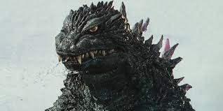

ยุคมิเลเนียม (Millennium Era: 1999-2004)
เริ่มต้น : ปี 1999 กับ Godzilla 2000: Millennium ซึ่งเป็นการรีบูตเฟรนไชส์อีกครั้ง โดยมีเนื้อเรื่องใหม่ที่ไม่เกี่ยวข้องกับยุคเฮเซย์
ธีมหลัก : ไม่มีเนื้อเรื่องที่ต่อเนื่องกันในภาพยนตร์แต่ละเรื่อง หนังแต่ละเรื่องในยุคนี้มักจะเป็นการเล่าเรื่องที่แยกออกจากกัน โดยแต่ละเรื่องจะให้การตีความ Godzilla แตกต่างกันไป
โทนเรื่องราว : หนังในยุคนี้มีทั้งโทนจริงจังและบันเทิงผสมกัน โดยการต่อสู้กับสัตว์ประหลาดอื่นยังคงเป็นจุดเด่น ตัวอย่างเช่น Godzilla, Mothra and King Ghidorah: Giant Monsters All-Out Attack และ Godzilla: Final Wars
จุดสิ้นสุด : Godzilla: Final Wars (2004) เป็นภาพยนตร์ที่ปิดท้ายยุคนี้ ซึ่งถือเป็นการรวมสัตว์ประหลาดหลายตัวจากประวัติศาสตร์เฟรนไชส์มาสู้กันในเรื่องเดียว
